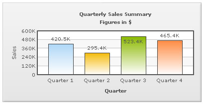

Background refers to the entire background of the chart.
The background color of the chart is fully customizable. You can use either a solid or a gradient fill using the attributes below:
| Attribute | Description | Example |
| bgColor | Lets you set the background color for the chart. Use hex color code without #. To use a gradient fill, specify all the colors required for the gradient fill separated by commas here. | bgColor="647881" |
| bgAlpha | Lets you set the alpha (transparency) for the background. Valid range is from 0-100. | bgAlpha="40" |
Example:
<chart bgColor='999999,FFFFFF' bgAlpha='50' ...>
You can also have a border around the chart. By default, the border is on in 2D charts and off in 3D Charts.
Shown below is a chart with a border around the chart.

The following attributes let you control the cosmetic properties of the chart border:
| Attribute | Description | Example |
| showBorder | Whether to show a border around the chart or not. By default, it's set to 1 in 2D charts and 0 in 3D charts. | showBorder="1" |
| borderColor | Border color of the chart. | borderColor="1D8BD1" |
| borderThickness | Border thickness of the chart (in pixels) | borderThickness="2" |
| borderAlpha | Border alpha of the chart. | borderAlpha="60" |
Example:
<chart ... showBorder='1' borderColor='FF0000' borderThickness='2' borderAlpha='50' ..>
When using a gradient fill for the background, you can set the alpha and ratio in which colors are to be distributed, and the angle at which you want the gradient to be. The following attributes help you do the same:
| Attribute | Description | Example |
| bgColor | To fill the background as gradient, you need to define two (or more) colors separated by comma. Use hex code of colors without specifying #. | bgColor="99CCFF,FFFFFF" or bgColor="FF5904,FFFDDD,FFFFFF" |
| bgAlpha | For each color code that you've specified in bgColor attribute, you need to specify a respective alpha (transparency). Separate the alphas by comma. | bgAlpha="40,100" or bgAlpha="100,60,100" |
| bgRatio | Ratio of each color in the gradient on a scale of 100. The total ratios specified as this attribute should sum up to 100. For example, if you want to plot a equidistant gradient for 2 colors, specify bgRatio as "0,100". | bgRatio="40,60" |
| bgAngle | Angle of the gradient fill (in degrees - 0-360). | bgAngle="180" |
You can also specify an external image (GIF,JPEG or PNG only) or a SWF file as the background of the chart, as shown below:
To do so, use the following attributes:
| Attribute | Description | Example |
| bgSWF | Lets you specify the Url (with full path) of the background image / SWF File. Make sure that the image and the chart SWF file are in the same sub-domain and you're providing a relative path. Absolute paths would be ignored and logged in debug window. | bgSWF="FruitsPic.jpg" |
| bgSWFAlpha | You can configure the alpha of the background (loaded) image using this property. | bgSWFAlpha="40" |
If you wish to set your chart background as transparent in the HTML page, you need to follow these steps:
- You need to configure chart's data as following:
- If you are feeding data in XML format, set <chart ... bgAlpha='0,0' ...>
- If you are feeding data in JSON format, set "chart":{ ... "bgalpha":"0,0", ...}
- In the HTML code that embeds the chart, set myChart.setTransparent(true) as under:
<div id="chartdiv" align="center">The chart will appear within this DIV. This text will be replaced by the chart.</div>
<script type="text/javascript">
var myChart = new FusionCharts("../FusionCharts/Column3D.swf", "myChartId", "900", "300", "0", "1");
myChart.setXMLUrl("Data.xml");
myChart.setTransparent(true);
myChart.render("chartdiv");
</script>
</div>
Shown below is an example, where a 2D Column Chart has been embedded in an HTML page with background image. Also, the canvas has been made transparent to highlight the effect.
You can also apply effects to background using STYLES. Shown below is an example where we've applied Bevel effect to the background:
Data for this can be listed as under:
<chart caption='Quarterly Sales Summary' subcaption='Figures in $' xAxisName='Quarter' yAxisName='Sales'>
<set label='Quarter 1' value='420500' />
<set label='Quarter 2' value='295400' />
<set label='Quarter 3' value='523400' />
<set label='Quarter 4' value='465400' />
<styles>
<definition>
<style name='myBevel' type='Bevel'/>
</definition>
<application>
<apply toObject='Background' styles='myBevel' />
</application>
</styles>
</chart>{
"chart":{
"caption":"Quarterly Sales Summary",
"subcaption":"Figures in $",
"xaxisname":"Quarter",
"yaxisname":"Sales"
},
"data":[{
"label":"Quarter 1",
"value":"420500"
},
{
"label":"Quarter 2",
"value":"295400"
},
{
"label":"Quarter 3",
"value":"523400"
},
{
"label":"Quarter 4",
"value":"465400"
}
],
"styles":[{
"definition":[{
"style":[{
"name":"myBevel",
"type":"Bevel"
}
]
}
],
"application":[{
"apply":[{
"toobject":"Background",
"styles":"myBevel"
}
]
}
]
}
]
}
Using STYLES, you can also apply animation to background. For example, the data below creates a fade-in effect for the background.
<chart caption='Quarterly Sales Summary' subcaption='Figures in $' xAxisName='Quarter' yAxisName='Sales'> <set label='Quarter 1' value='420500' /> <set label='Quarter 2' value='295400' /> <set label='Quarter 3' value='523400' /> <set label='Quarter 4' value='465400' /> <styles> <definition> <style name='myBgAnim' type='Animation' param='_alpha' start='0' duration='1'/> </definition> <application> <apply toObject='Background' styles='myBgAnim' /> </application> </styles> </chart>
{
"chart":{
"caption":"Quarterly Sales Summary",
"subcaption":"Figures in $",
"xaxisname":"Quarter",
"yaxisname":"Sales"
},
"data":[{
"label":"Quarter 1",
"value":"420500"
},
{
"label":"Quarter 2",
"value":"295400"
},
{
"label":"Quarter 3",
"value":"523400"
},
{
"label":"Quarter 4",
"value":"465400"
}
],
"styles":[{
"definition":[{
"style":[{
"name":"myBgAnim",
"type":"Animation",
"param":"_alpha",
"start":"0",
"duration":"1"
}
]
}
],
"application":[{
"apply":[{
"toobject":"Background",
"styles":"myBgAnim"
}
]
}
]
}
]
}